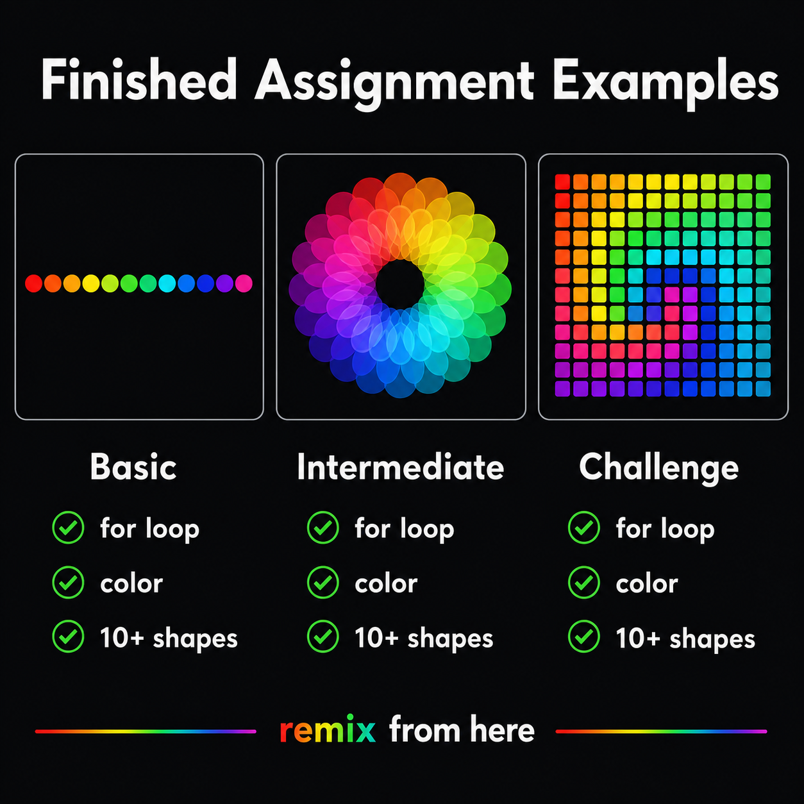

3주차 3교시 — 학생 주도 실습: 기하학적 패턴 아트
강의 아웃라인: week-03-outline 이전 교시: week-03-period2-student (for 반복문과 패턴) 다음 주차: week-04-outline (조건문과 인터랙션)
| 항목 | 내용 |
|---|---|
| 대상 | P5.js 입문자 (테크아트 전공) |
| 소요 시간 | 45분 |
| 사전 준비 | 1교시 색상 체계, 2교시 for 반복문·패턴 코드 |
| 결과물 | 반복문 기반 기하학적 패턴 아트 1점 (실습과제 1 기초) |
-
for반복문과 색상(RGB/HSB/alpha)을 결합해 기하학적 패턴 아트를 제작합니다 - 반복 변수
i를 좌표·크기·색상에 활용합니다 - 실습과제 1의 기초를 완성하고, 과제로 발전시킵니다
실습 시작 가이드
환경 설정
P5.js Web Editor를 엽니다 (아직 안 열었으면 editor.p5js.org 입력).
- P5.js Web Editor 접속 → 로그인 확인 (로그인해야 저장과 링크 공유가 가능합니다)
- File → New 로 새 스케치 생성
- 스케치 이름을 “week03-pattern” 으로 변경 (왼쪽 상단 연필 아이콘 클릭)
스타터 코드
이 코드를 복사해서 시작합니다. 2교시 마지막에 본 무지개 원입니다.
function setup() {
createCanvas(400, 400);
colorMode(HSB, 360, 100, 100, 255);
background(0, 0, 100);
noStroke();
for (let i = 0; i < 10; i++) {
fill(i * 36, 100, 100);
ellipse(i * 40 + 20, 200, 30, 30);
}
}재생 버튼을 눌러서 무지개 원 10개가 나오는지 확인하세요. 여기서 출발해 자기만의 패턴을 만들어갑니다.

Step 1 — 기본 반복 패턴 만들기
목표
for 반복문으로 도형을 한 줄로 나열하고, 간격과 크기를
조절합니다.
실험 1: 도형 바꾸기
원이 아닌 다른 도형으로 바꿔보세요.
// 원 대신 사각형
rect(i * 40 + 5, 185, 30, 30);
// 원 대신 삼각형 (triangle은 꼭짓점 3개 필요)
triangle(i * 40 + 20, 185, i * 40 + 5, 215, i * 40 + 35, 215);사각형은 rect(), 삼각형은 triangle()입니다.
2주차에서 배운 도형 함수들을 자유롭게 써보세요.
실험 2: 간격과 개수 조절
곱하는 숫자를 바꾸면 간격이, 반복 횟수를 바꾸면 도형 개수가 달라집니다.
// 좁은 간격으로 20개
for (let i = 0; i < 20; i++) {
fill(i * 18, 100, 100);
ellipse(i * 20 + 10, 200, 15, 15);
}개수를 10에서 20으로 바꿨으니 간격(i * 40 →
i * 20)과 크기(30 → 15)도 맞춰서 조절했습니다. 캔버스 안에
들어오도록 균형을 잡아보세요.
실험 3: 크기에 변화 주기
모든 원이 같은 크기일 필요는 없습니다. i를 크기에도 쓸
수 있습니다.
for (let i = 0; i < 10; i++) {
fill(i * 36, 100, 100);
ellipse(i * 40 + 20, 200, (i + 1) * 5, (i + 1) * 5); // 점점 커지는 원
}i=0일 때 크기 5, i=9일 때 크기 50. i + 1을 쓰는 이유는
i=0이면 크기 0이라 안 보이기 때문입니다.
Step 2 — 색상 적용하기
목표
RGB 또는 HSB 색상을 적용하고, 반복 변수 i를 색상에
활용합니다.
방법 A: HSB 무지개 (추천)
스타터 코드가 이미 HSB 무지개입니다. H 값에 i를 곱하면
색상환을 따라 색이 변합니다.
colorMode(HSB, 360, 100, 100, 255);
for (let i = 0; i < 10; i++) {
fill(i * 36, 100, 100); // H=0, 36, 72, ... 324 → 무지개
ellipse(i * 40 + 20, 200, 30, 30);
}채도(S)나 밝기(B)를 바꿔보세요. fill(i * 36, 50, 100) →
파스텔 톤 무지개!
방법 B: RGB 그라데이션
HSB 대신 RGB로 하고 싶으면, colorMode() 줄을 빼고
fill(r, g, b)를 씁니다.
// colorMode 없이 기본 RGB 모드
for (let i = 0; i < 10; i++) {
fill(i * 25, 50, 200); // 빨강이 점점 밝아지면서 파란 계열 유지
ellipse(i * 40 + 20, 200, 30, 30);
}방법 C: 투명도(alpha) 활용
색상뿐 아니라 투명도에도 i를 쓸 수 있습니다.
for (let i = 0; i < 10; i++) {
fill(340, 80, 100, i * 25); // 점점 선명해지는 분홍 (H=340)
ellipse(i * 40 + 20, 200, 30, 30);
}1교시에서 배운 alpha입니다. i=0이면 완전 투명(안 보임), i=9이면 거의 불투명.
실험: 배경색도 바꿔보기
배경색을 바꾸면 같은 패턴이 완전히 다른 느낌이 됩니다.
// 어두운 배경에 밝은 도형
background(0, 0, 15); // HSB: 거의 검정
fill(i * 36, 80, 100); // 선명한 무지개
// 따뜻한 배경
background(30, 20, 95); // HSB: 연한 베이지배경색은 작품의 분위기를 크게 좌우합니다. 다양하게 시도해보세요.
Step 3 — 패턴 발전시키기 + 꾸미기
목표
기본 패턴을 변형하여 자신만의 디자인으로 완성합니다.
아이디어 1: 여러 줄 만들기
한 줄이 아니라 여러 줄을 만들어보세요. for문을 하나 더 추가하면 됩니다.
function setup() {
createCanvas(400, 400);
colorMode(HSB, 360, 100, 100, 255);
background(0, 0, 15);
noStroke();
// 첫 번째 줄 — 무지개
for (let i = 0; i < 10; i++) {
fill(i * 36, 100, 100);
ellipse(i * 40 + 20, 100, 30, 30);
}
// 두 번째 줄 — 파스텔
for (let i = 0; i < 10; i++) {
fill(i * 36, 40, 100);
ellipse(i * 40 + 20, 200, 30, 30);
}
// 세 번째 줄 — 어두운 톤
for (let i = 0; i < 10; i++) {
fill(i * 36, 100, 50);
ellipse(i * 40 + 20, 300, 30, 30);
}
}같은 색상이지만 채도(S)와 밝기(B)만 다릅니다. 첫 줄은 선명, 둘째 줄은 파스텔, 셋째 줄은 어두운 톤.
아이디어 2: 도형 조합
원과 사각형을 같이 써보세요.
for (let i = 0; i < 10; i++) {
// 큰 사각형
fill(i * 36, 80, 100);
rect(i * 40, 180, 35, 35);
// 그 위에 작은 원
fill(0, 0, 100); // 흰색 포인트
ellipse(i * 40 + 17, 197, 15, 15);
}아이디어 3: 중첩 for문으로 격자 패턴 (도전)
2교시에서 본 격자 패턴을 직접 만들어보세요. for문 안에 for문을 넣습니다.
function setup() {
createCanvas(400, 400);
colorMode(HSB, 360, 100, 100, 255);
background(0, 0, 15);
noStroke();
for (let x = 0; x < 10; x++) {
for (let y = 0; y < 10; y++) {
fill((x + y) * 18, 80, 100);
rect(x * 40, y * 40, 35, 35);
}
}
}바깥 for문은 가로(x), 안쪽 for문은 세로(y)를 담당합니다.
(x + y)를 색상에 쓰면 대각선 방향의 그라데이션이
만들어집니다. 어렵게 느껴지면 이 코드를 복사해서 숫자만 바꿔보세요.
Step 4 — 확장: 선택 사항
기본 패턴을 과제 수준으로 발전시킵니다. Step 1~3을 마쳤다면 도전해보세요.
확장 A: 마우스 인터랙션 추가
2주차에서 배운 mouseX를 색상에 활용해보세요.
function setup() {
createCanvas(400, 400);
colorMode(HSB, 360, 100, 100, 255);
}
function draw() {
background(0, 0, 15);
noStroke();
for (let i = 0; i < 10; i++) {
fill((i * 36 + mouseX) % 360, 100, 100); // mouseX로 색상이 변함
ellipse(i * 40 + 20, 200, 30, 30);
}
}setup() 대신 draw()를 쓰면 매 프레임
반복되므로, 마우스를 움직이면 색이 실시간으로 변합니다.
% 360은 360을 넘으면 다시 0으로 돌아가게 하는 것입니다.
확장 B: map() 함수 활용
2교시에서 잠깐 본 map()을 직접 써보세요.
for (let i = 0; i < 10; i++) {
let hue = map(i, 0, 9, 0, 360); // i: 0~9 → hue: 0~360 (정확한 전체 범위)
let size = map(i, 0, 9, 10, 50); // i: 0~9 → size: 10~50
fill(hue, 100, 100);
ellipse(i * 40 + 20, 200, size, size);
}map(i, 0, 9, 0, 360) — i가 0~9일 때 결과를 0~360으로
자동 변환합니다. 곱셈으로 직접 계산할 필요 없이 원하는 범위를 정확히
포함할 수 있습니다.
확장 C: 여러 패턴 조합
서로 다른 패턴을 한 캔버스에 여러 개 배치해보세요.
function setup() {
createCanvas(400, 400);
colorMode(HSB, 360, 100, 100, 255);
background(0, 0, 15);
noStroke();
// 상단: 점점 커지는 무지개 원
for (let i = 0; i < 10; i++) {
fill(i * 36, 80, 100);
ellipse(i * 40 + 20, 80, (i + 1) * 4, (i + 1) * 4);
}
// 중단: 줄무늬 사각형
for (let i = 0; i < 20; i++) {
fill(i * 18, 60, 100);
rect(i * 20, 150, 20, 80);
}
// 하단: 반투명 원 겹치기
for (let i = 0; i < 15; i++) {
fill(200, 80, 100, map(i, 0, 14, 50, 200));
ellipse(i * 25 + 20, 320, 50, 50);
}
}상단은 무지개 원, 중단은 줄무늬, 하단은 반투명 겹치기. 각 구역마다 다른 패턴을 쓰면 작품이 풍성해집니다.
마무리
스케치 저장 확인
작품을 저장하세요. Ctrl+S (Mac은 Cmd+S). 제목이 ’week03-pattern’으로 되어 있는지도 확인하세요. 로그인하지 않은 상태로 작업했다면 코드가 사라질 수 있으니, 저장 전 로그인을 꼭 확인하세요.
실습과제 1 제출 요건
오늘 만든 패턴이 실습과제 1입니다.
| 항목 | 내용 |
|---|---|
| 과제명 | 기하학적 패턴 아트 |
| 제출 기한 | 4주차 수업 전까지 |
| 제출 방식 | P5.js Web Editor 스케치 링크 공유 |
| 필수 요구사항 | for문 1개+ / 색상(RGB 또는 HSB) / i 활용 / 도형 10개+ |
| 평가 | 제출 완료 시 만점 |
오늘 수업 시간에 만든 작품을 그대로 제출해도 되고, 집에서 더 발전시켜도 됩니다. 직접 시도하고 제출하는 과정이 중요합니다. 완성도는 평가하지 않습니다.
제출 방법
- P5.js Web Editor에서 File → Share → Edit 링크 복사
- 지정된 제출 채널에 링크 공유
4주차 예고
다음 주에는
조건문(if/else)과
마우스/키보드 인터랙션을 배웁니다. 오늘 만든 패턴에
조건문을 추가하면 ‘마우스를 클릭하면 색이 바뀌는’ 인터랙티브 패턴 아트가
됩니다. 정적인 작품이 살아 움직이는 작품으로
발전합니다.
(선택) 사전 학습 영상
미리 보면 다음 수업이 더 쉬워집니다. 선택 사항입니다.
| 영상 | 내용 | 길이 |
|---|---|---|
| The Coding Train “4.1 while and for Loops” | for 반복문 복습 | 약 14분 |
| The Coding Train “1.2 Color” | 색상 체계 복습 | 약 10분 |